Для анализа ELF-файлов в Linux существует большой арсенал встроенных инструментов и утилит:
Часть перечисленного (кроме hexdump и ldd) входит в состав пакета GNU Binutils. Если этого пакета в твоей системе нет, его легко установить. К примеру, в Ubuntu это выглядит следующим образом:
sudo apt install binutils
В принципе, имея все перечисленное, можно уже приступать к анализу и исследованию ELF-файлов без привлечения дополнительных средств. Для большего удобства и наглядности можно добавить к нашему инструментарию известный в кругах реверс‑инженеров дизассемблер IDA в версии Freeware (этой версии для наших целей будет более чем достаточно, хотя никто не запрещает воспользоваться версиями Home или Pro, если есть возможность за них заплатить).
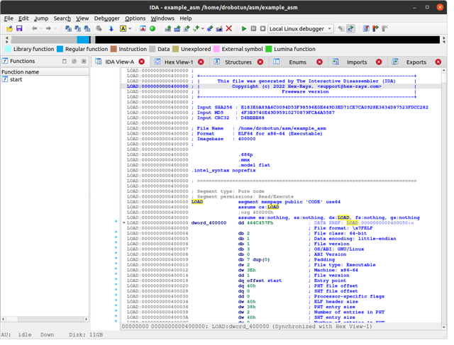
Анализ заголовка файл ELF в IDA
Также неплохо было бы использовать вместо hexdump что‑то поудобнее, например 010 Editor или wxHex Editor. Первый hex-редактор — достойная альтернатива Hiew для Linux (в том числе и благодаря возможности использовать в нем большое количество шаблонов для различных типов файлов, среди них и шаблон для парсинга ELF-файлов). Однако он небесплатный (стоимость лицензии начинается с 49,95 доллара, при этом есть 30-дневный триальный период).
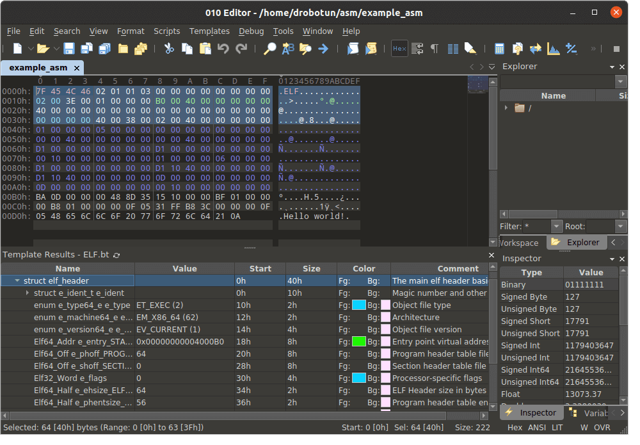
Анализ заголовка файл ELF в 010 Editor
Говоря о дополнительных инструментах, которые облегчают анализ ELF-файлов, нельзя не упомянуть Python-пакет lief. Используя этот пакет, можно писать Python-скрипты для анализа и модификации не только ELF-файлов, но и файлов PE и MachO. Скачать и установить этот пакет получится традиционным для Python-пакетов способом:
pip install lief
В Linux (да и во многих других современных UNIX-подобных операционных системах) формат ELF используется в нескольких типах файлов.
Исполняемый файл — содержит все необходимое для создания системой образа процесса и запуска этого процесса. В общем случае это инструкции и данные. Также в файле может присутствовать описание необходимых разделяемых объектных файлов, а также символьная и отладочная информация. Исполняемый файл может быть позиционно зависимым (в этом случае он грузится всегда по одному и тому же адресу, для 32-разрядных программ обычно это 0x8048000, для 64-разрядных — 0x400000) и позиционно независимым исполняемым файлом (PIE — Position Independent Execution или PIC — Position Independent Code). В этом случае адрес загрузки файла может меняться при каждой загрузке. При построении позиционно независимого исполняемого файла используются такие же принципы, как и при построении разделяемых объектных файлов.
Перемещаемый файл — содержит инструкции и данные, при этом они могут быть статически связаны с другими объектными файлами, в результате чего получается разделяемый объектный или исполняемый файл. К этому типу относятся объектные файлы статических библиотек (как правило, для статических библиотек имя начинается с lib и применяется расширение *.a), однако, как мы уже говорили, расширение в Linux практически ничего не определяет. В случае статических библиотек это просто дань традиции, а работоспособность библиотеки будет обеспечена с любым именем и любым расширением.
Разделяемый объектный файл — содержит инструкции и данные, может быть связан с другими перемещаемыми файлами или разделяемыми объектными файлами, в результате чего будет создан новый объектный файл. Такие файлы могут выполнять функции разделяемых библиотек (по аналогии с DLL-библиотеками Windows). При этом в момент запуска программы на выполнение операционная система динамически связывает эту разделяемую библиотеку с исполняемым файлом программы, и создается исполняемый образ приложения. Опять же традиционно разделяемые библиотеки имеют расширение *.so (от английского Shared Object).
Исполняемый файл — файл, который содержит образ памяти того или иного процесса на момент его завершения. В определенных ситуациях ядро может создавать файл с образом памяти аварийно завершившегося процесса. Этот файл также создается в формате ELF, однако мы о такого рода файлах говорить не будем, поскольку задача исследования дампов и содержимого памяти достаточно объемна и требует отдельной статьи.
Для наших изысканий нам желательно иметь все возможные варианты исполняемых файлов из перечисленных выше, чем мы сейчас и займемся.
Не будем выдумывать что‑то сверхоригинальное, а остановимся на классическом хелловорлде на С:
|
2 3 4 5 |
Компилировать это дело мы будем с помощью GCC. Современные версии Linux, как правило, 64-разрядные, и входящие в их состав по умолчанию средства разработки (в том числе и компилятор GCC) генерируют 64-разрядные приложения. Мы в своих исследованиях не будем отдельно вникать в 32-разрядные ELF-файлы (по большому счету отличий от 64-разрядных ELF-файлов в них не очень много) и основные усилия сосредоточим именно на 64-разрядных версиях программ. Если у тебя возникнет желание поэкспериментировать с 32-разрядными файлами, то при компиляции в GCC нужно добавить опцию -m32, при этом, возможно, потребуется установить библиотеку gcc-multilib. Сделать это можно примерно вот так:
Итак, назовем наш хелловорлд example.c (кстати, здесь как раз один из немногих случаев, когда в Linux расширение имеет значение) и начнем с исполняемого позиционно зависимого кода:
Как ты уже догадался, опция -no-pie как раз и говорит компилятору собрать не позиционно независимый код.
Вообще, если говорить правильно, то GCC — это не совсем компилятор. Это комплексная утилита, которая в зависимости от расширения входного файла и опций вызывает нужный компилятор или компоновщик с соответствующими входными данными. Причем из С или другого высокоуровневого языка сначала исходник транслируется в ассемблерный код, а уже затем все это окончательно преобразуется в объектный код и собирается в нужный нам ELF-файл.
В целом можно выделить четыре этапа работы GCC:
Чтобы посмотреть на промежуточный результат, к примеру в виде ассемблерного кода, используй в GCC опцию -S:
Обрати внимание на два момента. Первый — мы в данном случае не задаем имя выходного файла с помощью опции -o (GCC сам определит его из исходного, добавив расширение *.s, что и означает присутствие в файле ассемблерного кода). Второй момент — опция -masm=intel, которая говорит о том, что ассемблерный код в выходном файле необходимо генерировать с использованием синтаксиса Intel (по умолчанию будет синтаксис AT&T, мне же, как и, наверное, большинству, синтаксис Intel ближе). Также в этом случае опция -no-pie не имеет смысла, поскольку ассемблерный код в любом случае будет одинаковый, а переносимость обеспечивается на этапе получения объектного файла и сборки программы.
На выходе получим файл example.s с таким вот содержимым (полностью весь файл показывать не будем, чтобы не занимать много места):
|
2 3 4 5 6 7 8 9 10 11 12 13 14 15 16 17 18 19 20 21 22 |
Обрати внимание на строку call puts@PLT — это вызов сишной функции puts(). Несмотря на то что в исходнике мы применили функцию printf(), компилятор самостоятельно провел небольшую оптимизацию и заменил ее puts(), поскольку в printf() мы не использовали какие‑либо спецификаторы форматирования вывода строки, а puts() работает быстрее, чем
printf()
В целом поэтапная работа GCC при компиляции файла exmple.c представлена в виде схемы на рисунке.
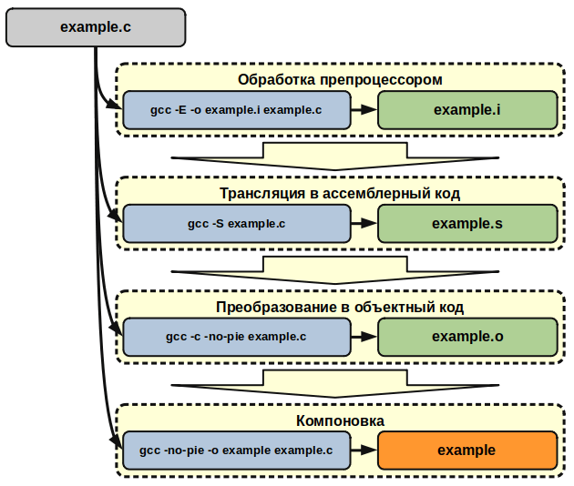
Этапы процесса компиляции файла example.c
Используя опции -E, -S и -c, можно остановить процесс компиляции в нужном месте и зафиксировать результат каждого этапа в виде выходного файла.
Далее сделаем позиционно независимый исполняемый ELF-файл (здесь все просто и никаких дополнительных опций не нужно):
Также для разнообразия стоит написать хелловорлд на ассемблере с использованием системных вызовов Linux, а не функций из сишных библиотек. Используем для этого Fasm. Совсем недавно мы уже обращались к этому языку (правда, под Windows) и разобрались, что это такое. Сегодня применим полученные знания в Linux. Для простоты возьмем пример программы hello64.asm, которая идет в комплекте с
Скомпилируем это все с помощью Flat Assembler:
На выходе получим позиционно зависимый исполняемый файл, который не использует функции из сторонних библиотек.
Для перемещаемого или разделяемого (в виде динамической библиотеки) ELF-файла необходимо немножко изменить наш хелловорлд:
|
2 3 4 5 |
Назовем этот исходник, к примеру, exmple_lib.c и скомпилируем (без линковки) с применением опции -c:
Далее напишем и выполним в терминале следующее:
Если ты погуглишь назначение утилиты ar, то увидишь, что это архиватор. Так сложилось, что по своему прямому предназначению (создавать архивы из файлов) он применяется крайне редко, а вот для создания статически прилиноковываемых библиотек — почти всегда. Дело в том, что статические библиотеки (те самые, с расширением *.a и префиксом lib в имени файла) — это не что иное, как архив, состоящий из нескольких скомпилированных (без линковки) ELF-файлов, а также информации об индексации этих файлов для быстрого поиска нужных функций при общей линковке приложения. Кстати, проиндексировать нашу библиотеку можно такой вот командой:
ranlib libstatic_example.a
Итак, с перемещаемым ELF разобрались, теперь сделаем разделяемый. Возьмем уже готовый скомпилированный без линковки объектный файл example_lib.o и скормим его GCC с опцией -shared:
Поскольку Linux в случае необходимости ищет библиотеки в специально отведенных каталогах, то получившийся в результате файл нужно сложить в какой‑либо из этих каталогов, к примеру /usr/lib или /lib:
Теперь нужно проверить работоспособность наших библиотек. Для этого напишем программу, которая будет вызывать функцию hello_world_function() из этих библиотек:
|
2 3 4 5 |
int main(int argc, char* argv[]) { |
Скомпилируем ее со статической библиотекой:
|
gcc example_ext_func.c lib_static_example.a -o example_static |
И сделаем то же самое с динамической библиотекой:
Обрати внимание, что при компиляции с разделяемой библиотекой не указывается ее префикс lib, а также расширение и предваряется все это опцией -l.
Теперь у нас есть образцы практически всех возможных вариантов ELF-файлов и мы можем приступить к исследованиям устройства ELF-файлов различных типов.
ELF-файл состоит из заголовка и данных, которые включают в себя область так называемых заголовков программ, область заголовков секций и самих секций. В последних как раз и содержатся код, данные и все остальное, необходимое для использования этого ELF-файла по назначению. Структура 64-разрядного ELF-файла схематично показана на рисунке ниже.
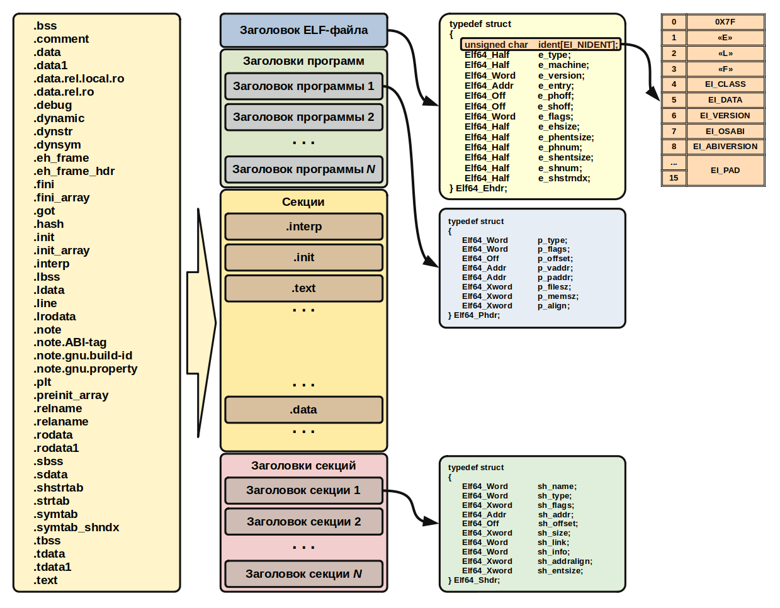
Общая структура 64-разрядного ELF-файла
Присутствие заголовка и секций с кодом, данными и всем остальным для ELF-файлов обязательно, тогда как одновременное наличие заголовков программ и заголовков секций — нет. В файле могут одновременно присутствовать обе этих области с заголовками программ и секций либо одна из них. Чуть позже мы разберемся, от чего это зависит.
Спецификацию формата ELF-файлов можно взять здесь, а отличия 64-разрядных «эльфов» от 32-разрядных посмотреть вот здесь.
Как мы уже выяснили, любой ELF-файл начинается с заголовка, который представляет структуру, содержащую информацию о типе файла, его разрядности, типе архитектуры, версии ABI (Application Binary Interface), а также о том, где в файле искать все остальное. Формат структур заголовка как для 32-разрядных, так и для 64-разрядных ELF-файлов (как, впрочем, и форматы всех остальных структур ELF-файлов) можно посмотреть в файле:
Первые 16 байт заголовка (массив e_ident) служат для идентификации ELF-файла. Первые четыре байта — это магическая константа, состоящая из байта 0x7f, за которым идут ASCII-коды символов E, L и F. По наличию этих байтов загрузчик Linux (или, к примеру, утилита file) определяет, что перед ним именно ELF-файл (в PE-файлах Windows аналогичную функцию выполняет комбинация из ASCII-кодов символов M и Z). Следующие в этом массиве байты в файле elf.h обозначаются такими константами:
Далее после массива e_ident расположены следующие поля:
Чтобы посмотреть на заголовок ELF-файла воочию, воспользуемся утилитой readelf (здесь опция -W указывает, что необходимо выводить полные строки, без ограничения в 80 символов в строке, а опция -h говорит, что вывести нужно именно заголовок):
На выходе получим следующую картину.
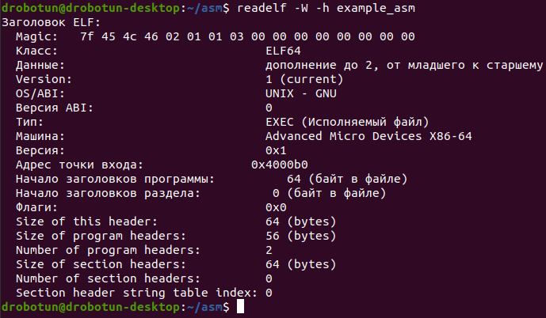
Вывод заголовка ELF-файла с помощью readelf
Также посмотреть на заголовок ELF-файла можно с помощью любого шестнадцатеричного редактора (к примеру, на рисунке с hex-редактором 010 Editor выделен заголовок ELF-файла с нашим хелловорлдом на ассемблере) или привлечь к этому делу «Иду» (на рисунке выше видно заголовок этого же файла).
На Python можно написать простой скрипт (с использованием lief), который может вывести как заголовок полностью, так и отдельные его элементы:
|
2 3 4 5 6 |
elf_object = lief.parse('example_asm') |
Ну и наконец, можно написать в терминале (в данном случае информации будет несколько меньше по сравнению с readelf):
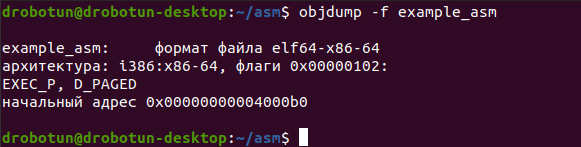
Результат работы objdump: вывод информации о заголовке ELF-файла
Код и данные в ELF-файле логически разделены на секции, которые представляют собой непересекающиеся смежные блоки, расположенные в файле друг за другом без промежутков. У секций нет определенной общей структуры: в каждой секции организация размещения данных или кода зависит от ее назначения. Более того, некоторые секции вообще могут не иметь какой‑либо структуры, а представлять собой неструктурированный блок кода или данных. Каждая секция описывается своим заголовком, который хранится в таблице заголовков секций. В заголовке перечислены свойства секции, а также местонахождение содержимого самой секции в файле.
Вообще, если внимательно посмотреть спецификацию ELF-файла, то можно увидеть, что деление на секции предназначено для организации работы компоновщика, а с точки зрения исполнения файла секционная организация не несет никакой полезной информации. То есть не нуждающиеся в компоновке ELF-файлы (неперемещаемые исполняемые файлы) могут не иметь таблицы заголовков секций (и во многих случаях ее не имеют). Для загрузки в память процесса и выполнения ELF-файлов используется еще одна логическая организация — сегментная, о которой мы поговорим ниже. Если в ELF-файле нет таблицы заголовков секций, поле e_shoff в заголовке будет равно нулю.
К примеру, если попробовать вывести информацию о секциях для нашего неперемещаемого исполняемого файла, полученного в начале статьи из исходников примера Fasm (напомню, что файл мы назвали example_asm):
то мы увидим, что раздела с таблицей заголовков секций в этом файле нет.
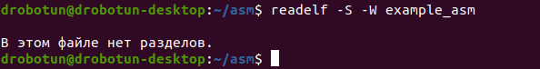
Попытка вывести таблицу заголовков секций для исполняемого неперемещаемого ELF-файла
Если же мы произведем аналогичную операцию с любым другим файлом из числа наших подопытных экземпляров (к примеру, файлом example_pie), то раздел с таблицей заголовков секций будет присутствовать.
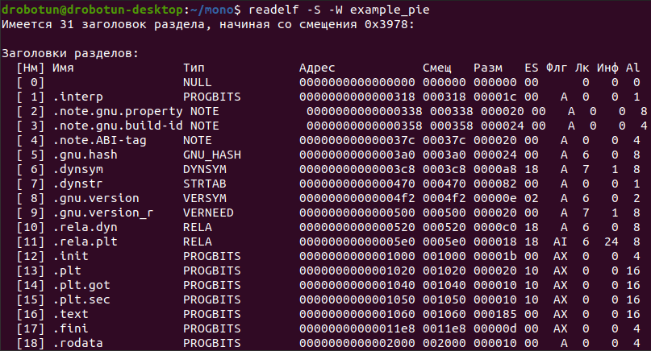
Таблица заголовков секций в файле example_pie
Кстати, вывести информацию из раздела заголовков секций можно и с помощью Python (совместно с lief), написав примерно вот такой скрипт:
|
2 3 4 |
elf_object = lief.parse('example_pie') for section in elf_object.sections: print('Section {name} - size: {size} bytes'.format(name=section.name, size=section.size)) |
Исходя из сказанного выше, необходимо помнить, что о секционном представлении и организации ELF-файла имеет смысл говорить на этапе компоновки, а при загрузке файла в память процесса для его последующего выполнения используется сегментное представление и организация файла.
Итак, как мы выяснили, в заголовках секций (если в ELF-файле есть раздел с таблицей заголовков секций) содержится информация о свойствах и местонахождении той или иной секции. Заголовки секций представляют собой структуру, описание которой можно найти в файле /usr/include/elf.h (там эти структуры носят имена Elf64_Shdr и Elf32_Shdr для 64- и 32-разрядных файлов соответственно).
Разберемся с назначением каждого из полей этой структуры:
Если секция не относится к такому виду, то поле содержит нулевое значение.
Сегодня мы не будем подробно разбирать назначение и структуру всех возможных секций в ELF-файле, их довольно много. На рисунке с общей структурой ELF-файла перечислены стандартные имена всех возможных секций, определенных в спецификациях, в том числе и применительно к ABI архитектуры x86-64. Рассмотрим наиболее значимые с точки зрения первоначального анализа ELF-файлов секции.
Секция .interp
В этой секции лежит путь к динамическому компоновщику, который компонует ELF-файл при загрузке его в память и подготавливает его к выполнению. Динамический компоновщик содержит стартовый код, отображающий разделяемые библиотеки на адресное пространство загруженного в память ELF-файла.
Также он выполняет все подготовительные этапы, связанные с разрешением ссылок на функции, определенные во внешних библиотеках. После всего этого динамический компоновщик передает управление загруженному приложению. Посмотреть содержимое секции .interp можно следующим образом (опция -p утилиты readelf выводит указанную секцию в строковом представлении):
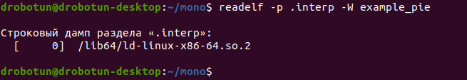
Путь к динамическому компоновщику в секции `.interp` файла *example_pie*
Если же мы попробуем посмотреть содержимое этой секции не в исполняемом файле, а в разделяемой библиотеке (один из наших подопытных файлов libdynamic_example.so), то увидим следующую картину.
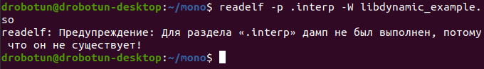
Попытка вывести секцию `.interp` файла с разделяемой библиотекой
Наличие (или отсутствие) секции .interp как раз и является одним из отличий исполняемого перемещаемого файла от разделяемой библиотеки (как мы отметили выше, оба этих типа ELF-файлов имеют значение ET_DYN в поле e_type заголовка). Второе отличие — права на выполнение у файла (те самые, которые устанавливаются командой chmod с параметром -x). В подавляющем большинстве случаев в разделяемой библиотеке нет ни секции .interp, ни прав на выполнение файла. Из этого правила могут быть исключения. Например, библиотека с основными функциями С libc (на нынешних системах это файл libc.so.6) вполне запускается и выводит информацию о себе.
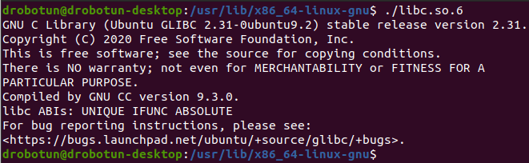
Запуск разделяемой библиотеки `libc`
Секции .init и .fini
В секции .init находится код, выполняющийся перед запуском кода, который начинается в точке входа (этот код расположен в секции .text, и об этой секции мы поговорим ниже). Если дизассемблировать какой‑нибудь ELF-файл (например, используя objdump) и посмотреть внутрь этой секции, то можно увидеть две функции: _init и __gmon_start__.
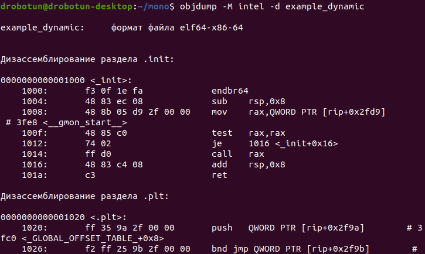
Дизассемблированная секция `.init` (видно, что внутри лежат функции `_init` и `__gmon_start__`)
Задача этих функций — инициализировать и попытаться запустить профилировщик gprof. Чтобы эта попытка оказалась удачной и ELF-файл запустился под профилировщиком, этот файл должен быть скомпилирован с опцией -pg. В данном случае (если внимательно посмотреть на дизассемблированный код функции) в регистре rax будет находиться адрес функции __gmon_start__, которая и вызовет gprof перед выполнением основного кода программы. В противном случае в rax будет 0, вызова __gmon_start__ и, соответственно, профилировщика, не произойдет, а выполнение будет передано сразу на код в секции text.
Секция .fini содержит в себе функцию _fini, которая выполняется после выполнения основного кода программы.
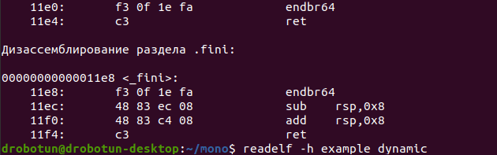
Дизассемблированная секция `.fini`
Секция .text
Здесь как раз и находится весь тот код, ради выполнения которого и была написана программа и на который указывает поле e_entry заголовка ELF-файла. Однако если посмотреть дизассемблированный листинг этой секции, то вопреки ожиданиям мы увидим, что по адресу, на который указывает точка входа, лежит не функция main(), а некая функция _start, после которой присутствует еще несколько функций, выполняющих подготовку к запуску программы (например, deregister_tm_clones, register_tm_clones и frame_dummy).
Функция _start считывает параметры командной строки (если они есть) и вызывает функцию __libc_start_main. И уже эта функция вызывает на выполнение функцию main(), где содержится основной код программы.
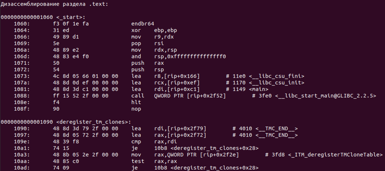
Дизассемблированная секция `.text`
Секция .data
Секция для хранения инициализированных переменных, изменение которых возможно в ходе выполнения программы (соответственно, эта секция имеет флаг SHF_WRITE).
Секция .rodata
В этой секции хранятся константные значения, то есть значения, которые не подлежат изменению в ходе выполнения программы.
Секция .bss
Секция .bss предназначена для неинициализированных переменных. Если секции .data и .rodata имеют тип SHT_PROGBITS, эта секция, как мы уже отмечали выше, имеет тип SHT_NOBITS. Данная секция не занимает место в ELF-файле, поскольку и так понятно, что неинициализированные переменные равны нулю, а хранить эти нули в ELF-файле нет никакого смысла.
Как мы уже говорили, сегментное представление используется компоновщиком при загрузке ELF-файла в процесс для выполнения. Этот тип представления дает таблица заголовков программы (повторюсь, если исследуемый файл не предназначен для выполнения, то эта таблица может отсутствовать). Таблица заголовков программы описывается структурой Elf32_Phdr или Elf64_Phdr из уже знакомого нам файла /usr/include/elf.h.
В целом сегмент может включать в себя ноль и более секций, то есть объединяет секции в один блок. Здесь может возникнуть справедливый вопрос: почему же тогда в сегменте может быть ноль секций?
Дело в том, что некоторые типы сегментов при описании их в ELF-файле не имеют внутри себя никаких секций (то есть они пустые). К примеру, пустые секции имеет заголовок, с которого начинается таблица заголовков программы (он самый первый в таблице и как раз и сигнализирует о том, что с этого места начинается таблица заголовков), или сегмент, хранящий информацию о стеке (имеет тип заголовка PT_GNU_STACK).
Вывести информацию о сегментах можно следующим образом:
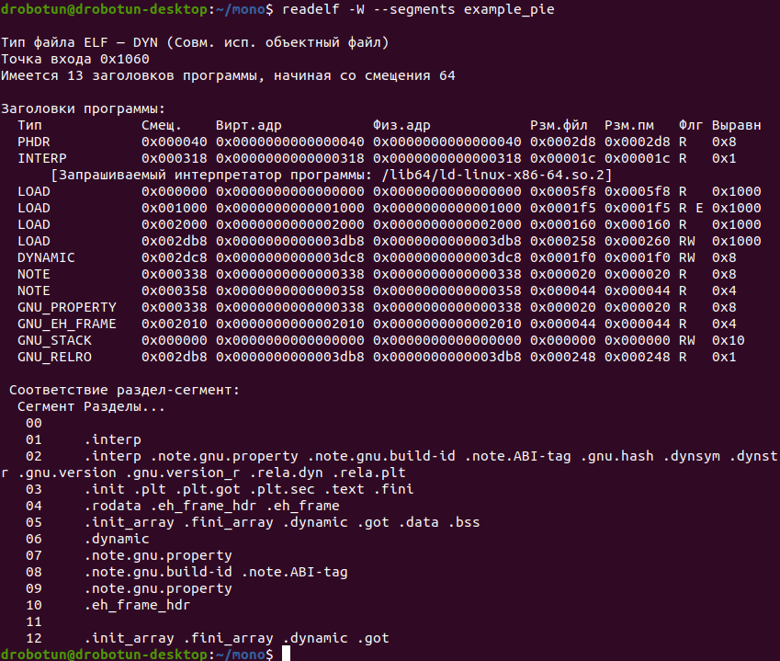
Вывод информации о сегментах с помощью `readelf`
Если посмотреть внимательно на рисунок, то видно, что, помимо самих заголовков программы, выводится и информация о соответствии тому или иному сегменту тех или иных секций (при этом также видно, что в сегментах с номерами 00 и 07 секции отсутствуют).
Итак, основные поля заголовка программы таковы:
Ну а скрипт на Python (с использованием модуля lief) для просмотра информации о сегментах ELF-файла может выглядеть примерно так:
Этой статьей мы начали погружение во все тонкости формата ELF-файлов. Мы разобрались с форматом заголовка, с таблицами заголовков секций и сегментов, а также заглянули внутрь некоторых из них. Как видишь, отличия от PE-формата весьма существенные, хотя некоторые аналогии все же прослеживаются.
В следующий раз мы изучим более подробно содержание и назначение других секций, а также разберемся с компоновкой и связыванием различных функций из библиотек с исполняемым файлом.